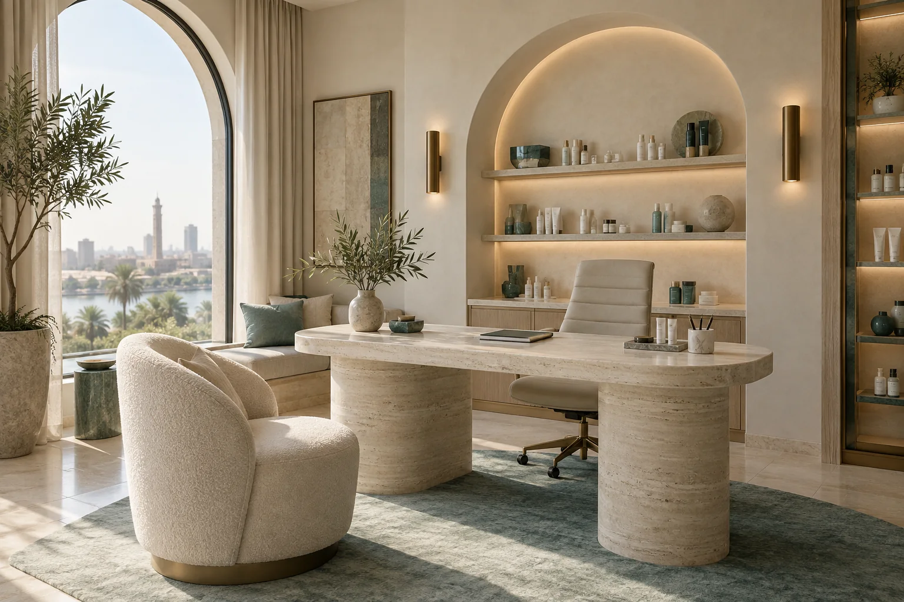

موقع طبي سريع وواضح
صفحات تعرض التخصص والخدمات ومعلومات التواصل، بتجربة مناسبة للهاتف والكمبيوتر.
تصميم وبرمجة مواقعنمو رقمي للعيادات والمراكز الطبية
موقع طبي واضح، محتوى مناسب لتخصصك، وحملات تصل إلى جمهورك. نرتب معك الرسالة والصفحات وقنوات التواصل قبل الإطلاق.
سيُفتح واتساب بمسودة رسالة؛ لن تُرسل تلقائيًا.

خدمات مترابطة، تبدأ من طريقة عرض العيادة
ما الذي يمكن تنفيذه؟
نحدد نطاق العمل بعد فهم التخصص والجمهور والخدمات التي تريد العيادة إبرازها.
صفحات تعرض التخصص والخدمات ومعلومات التواصل، بتجربة مناسبة للهاتف والكمبيوتر.
تصميم وبرمجة مواقعصياغة وتنظيم المحتوى بما يساعد الزائر على فهم الخدمة، مع مراجعة المعلومات الطبية من العيادة.
محتوى وسوشيال ميدياإعداد حملات على القنوات المناسبة، مع رسائل وصفحات متوافقة مع هدف الحملة.
إعلانات ممولة وSEOمن أول نقاش إلى الإطلاق
لا نضع خدمة أو وعدًا قبل مراجعة التخصص والجمهور والمواد المتاحة. نرتب نطاقًا واضحًا، ثم نبني الصفحات والحملة حوله.
اطلب مراجعة مشروعكالتخصص، المدينة، الخدمات، والهدف من الموقع.
الصفحات والمحتوى ومسار التواصل المناسب.
نختبر الموقع على الهاتف والكمبيوتر قبل الإطلاق.
من أعمال المواقع المنشورة
يعرض معرض Sky Wave مشروعًا طبيًا يتضمن نظام حجز مواعيد إلكترونيًا ومعرض صور ومعلومات عن الخدمات. افتح الموقع الفعلي لمراجعته.
زيارة موقع العيادةقبل ما تبدأ
الإجابات النهائية تعتمد على نطاق المشروع ومواد العيادة المعتمدة.
نعم. يمكن طلب تصميم وبرمجة موقع، أو مناقشة خدمات أخرى مثل الإعلانات والمحتوى وSEO حسب الاحتياج.
لا. تراجع العيادة المعلومات الطبية والخدمات قبل النشر، ونرتب عرضها وصياغتها للموقع.
تُحدد بعد مراجعة الصفحات والوظائف والمواد المطلوبة. أرسل ملخص المشروع لتحصل على نطاق مناسب.
الخطوة الأولى
أرسل احتياجك، وسيحدد فريق Sky Wave نقطة البداية المناسبة.